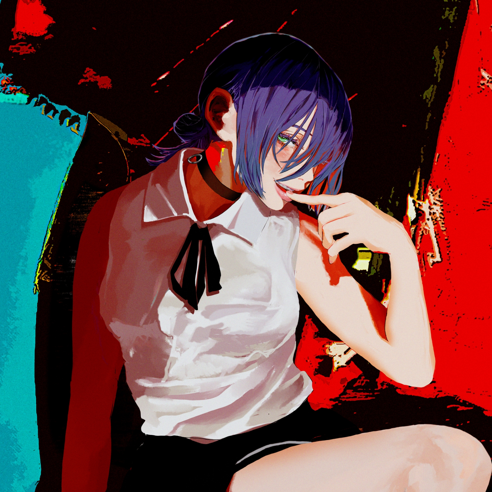
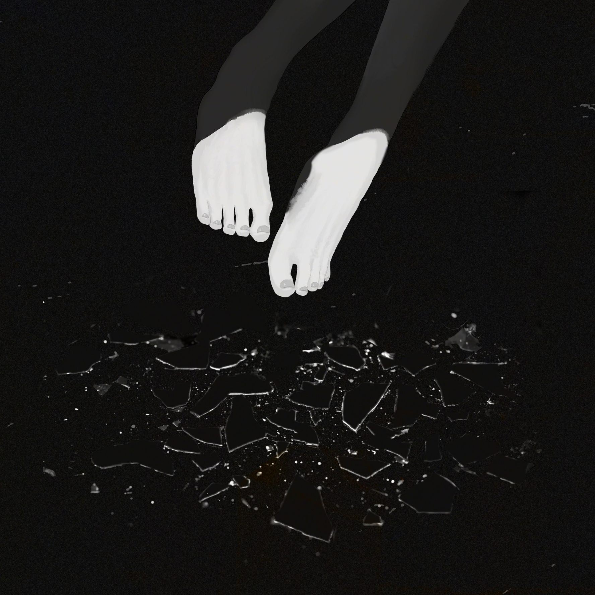
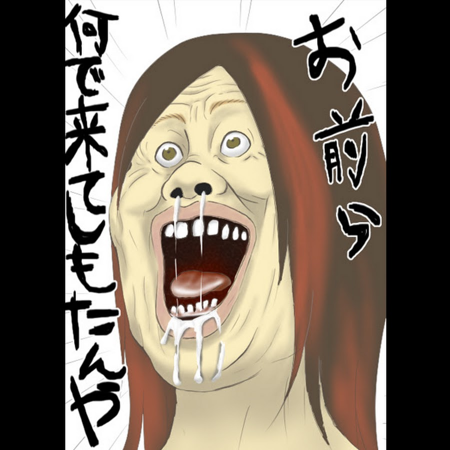
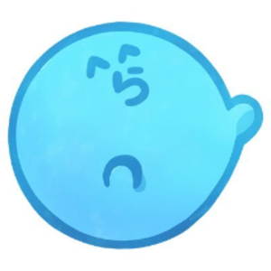

My Favorite Things
This page is edited for introducing of my favorite things as a purpose.
This page is edited for introducing of my favorite things as a purpose.


Kenshi Yonezu, musician and illustrator- In September, he dropped his latest track, "IRIS OUT", the official theme fo the new film CHAINSAW MAN-THE MOVIE: REZE ARC-, and its ending theme "JANE DOE" on 9/22.


Megatera Zero is one of Japan's top singers. His distinctive singing voice is known for its aggressive growl and one-of-a-kind husky voice with a rich and wide range.

He has commenting on various games, mainly the game "Minecraft", and in particular, his project "Aooni Gokko," which recreates the horror game Aooni on Minecraft, has been a popular project since his days on NicoNico.